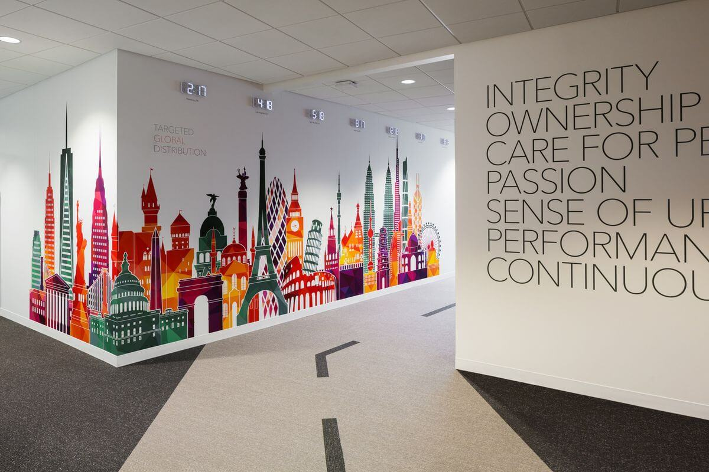

Цветная графика в дизайне
.jpg)
Цветная графика используется в дизайне для создания ярких и запоминающихся образов. С её помощью можно визуализировать информацию, сделать её более доступной и понятной.
В современном дизайне графика имеет огромное значение. Она помогает выделить ключевые моменты, делать материал более привлекательным и наглядным для зрителей.
Цветовая гамма в графике играет важную роль в создании нужной атмосферы и передаче информации с максимальной точностью.
Применение цветной графики в рекламе
В рекламе цветная графика используется для создания ярких, привлекающих внимание изображений. Она помогает выделить ключевые элементы и привлекает внимание к товарам и услугам.
С помощью графики в рекламе можно не только передать информацию о продукте, но и вызвать у зрителей нужные эмоции и ассоциации.
Рекламные материалы с яркой графикой часто становятся более успешными, так как они быстро привлекают внимание и запоминаются.
Графика и её влияние на восприятие
.jpg)
Цветная графика помогает создать правильное восприятие информации. Цвета влияют на настроение, они могут успокаивать или возбуждать, помогать сфокусировать внимание на определённых деталях.
Современные дизайнеры и художники используют цветную графику для создания сильных визуальных эффектов, которые остаются в памяти зрителей.
Графика с правильным цветовым решением может значительно усилить восприятие материала, делая его более эффективным и привлекательным.
"Графика — это искусство, которое помогает передать идеи через визуальные образы."